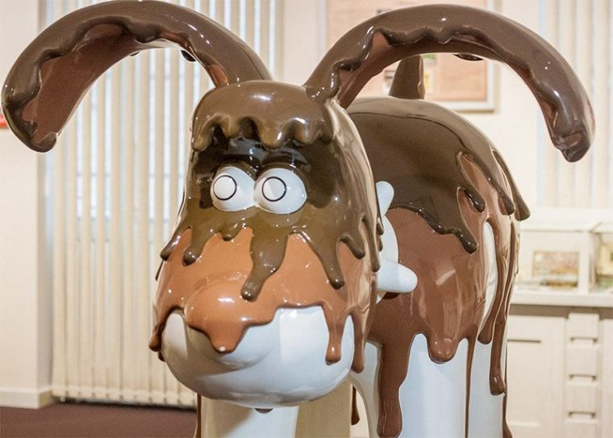
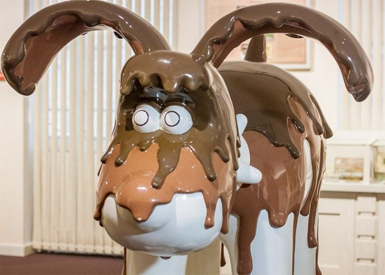
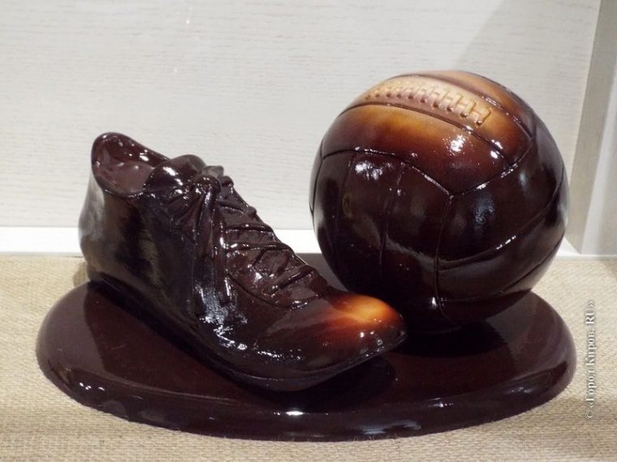

В сентябре 2014 г. открылся музей шоколада в Кирове . Точное название музея «Музей истории шоколада Криолло». К слову сказать, пока это первый и единственный частный музей в Кирове.Благодаря стараниям Ксении Лариной – дочь Валерия Крепостнова, местные жители смогут попасть в сладостное путешествие – музей шоколада . Киров знаменит не только музеем , но и своими усадьбами: музей-усадьба Хохрякова и Васнецовых.Разместился музей шоколада Кирова рядом с Краеведческим музеем и театром на Спасской улице, дом 15, что позволяет посетить сразу несколько интересных мест за короткое время в рамках одного дня. Музей шоколада Кирова охватывает всю историю шоколада начиная от индейцев майя заканчивая нашим временем, а его история, без малого, насчитывает более 3 000 лет.
Музей шоколада Кирова «Криолло» был назван в честь «благородного» сорта какао-бобов «Криолло». В переводе с испанском это означает «туземец». Существует два основных сорта какао – криолло и форастеро (переводится как «пришелец»). Криолло не зря прозвали «благородным» — он имеет красный и мягкий вид и не нуждается в дополнительной ферментации (сушка и подготовка к долгому хранению).

На территории Кировского музея вас встречает не только экспозиция с ее шоколадными участниками, но и кондитерская мастерская, которая по заверениям администрации является лишь дополнением к музею. Изготовление лакомства очень увлекательный процесс, но признаться, мы больше предпочитаем конечный результат и с удовольствием его уплетаем за обе щеки.Сейчас очень популярны интерактивные музеи, места, где можно не только посмотреть и сфотографировать экспонаты, но и поучаствовать в разных конкурсах, мастер-классах, сделать что-то своими руками и забрать сувенир с собой на память.
Музей шоколада Кирова соответствует духу времени – кроме фотографий и дегустации музейного лакомства, вы самостоятельно сможете приготовить фигурку из шоколада и забрать ее как сувенир. Правда, сувениром это будет не долго, ведь изготовленный там сувенир, действительно очень вкусный и вряд ли удастся поставить его на полочку. Скорее всего, вы еще вернетесь сюда за «шоколадным сувениром» и не раз.
Экскурсоводы в музее шоколада Кирова расскажут вам удивительные истории об обычаях древних народов майя и ацтеков. Между прочим, именно ацтеки являются авторами первоначального названия шоколада – «чокоатль». В ту пору шоколад был редчайшим товаром, а потому ценился выше золота. За какао-бобы ацтеки покупали рабов и могли обменять их на любой товар, а сам шоколад считался напитком богов.
Вы узнаете какой путь шоколад проделал, чтобы попасть в Россию, в каком виде и где его продавали изначально, кто были инициатором развития культуры шоколадного производства и почему дореволюционный российский шоколад был популярен во всем мире.Музей находится в Кирове и, конечно же, мы не обойдем стороной Вятских «шоколатье» — Станислава Осиповича, создавшего первую кондитерскую фабрику в Кирове. Далее, вы посетите «Шоколадные комнаты» с огромными скульптурами из шоколада. Вес каждой из них 50-80.
 

Для всех желающих обучиться изготовлению удивительного лакомства музей шоколада Кирова предлагает посетить мастер-классы. Вы можете участвовать в стандартном (20 мин.) или расширенном мастер-классах (40 мин.). В стандартный входит изготовление фигурки (7 см) из шоколада, а в расширенный – фигурка 15 см.
Для пар, желающих провести романтический вечер в музее, администрация музея предлагает специальное оформление, изготовление 2 шоколадных фигур с чаем и шампанским. Мероприятие можно заказать на любой день после 20:00, кроме понедельника.
В музее проводятся экскурсии для разных возрастов: для детей с 6 до 10 лет, с 10 лет, школьников и взрослых. Продолжительность экскурсии 90 мин. За полтора часа вы примите участие в мастер-классах по приготовлению этого лакомства, попробуете на вкус разные сорта какао и шоколада, совершите путешествие в историю возникновения деликатеса в сопровождении профессиональных экскурсоводов музея.Аналогичный музей находится в Испании – музей шоколада в Барселоне. Если вы собираетесь поехать в Испанию, то вы просто обязаны посетить этот музей.
